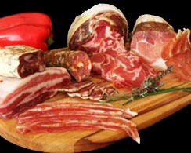

Los quesos que utilizamos en "Los changos" nos llegan directamente desde
ciudades como Suipacha, Lincoln, Brandsen o Tandil, corredor tambero por
excelencia de nuestro país.
Allí, en el corazón de la provincia de Buenos Aires, son elaborados en
forma artesanal a partir de una selección de la mejor materia prima. En
su mayoría aptos para celíacos, lo que nos garantiza una calidad óptima
sin agregados químicos.
Desde las pastas semiduras a blandas, pasando por los grasos y
semigrasos hasta los saborizados con hierbas, pimienta en grano o
ahumados, te ofrecemos un amplio abanico de distintas recetas para que
puedas degustar siempre sea cual sea tu preferencia.
fiambres

En "Los changos" queremos darte lo mejor. Por eso preparamos tus picadas
con productos artesanales, que resaltan sabores propios como los de las
silvestrías pampeanas, en nuestra Patagonia, y las carnes de los rodeos
de la región..
Tema aparte son nuestros salames y chorizos. Elaborados artesanalmente,
nos llegan directo desde Tandil. Un producto único, de una zona
geográfica con características geológicas, climáticas, culturales e
históricas, que se conjugan con un riguroso procedimiento de elaboración
y maduración en el que actúan todos los elementos representativos de la
tierra y de la gente.